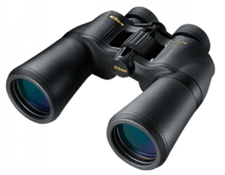
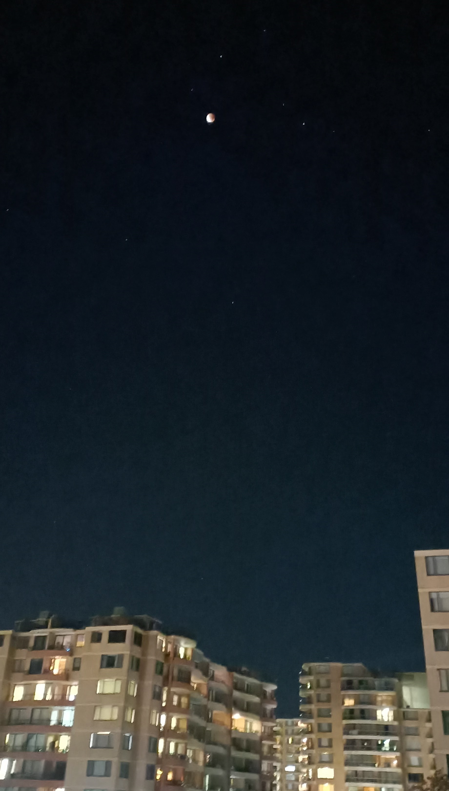

Watched Ecilipse at a Cold Night
Tonight there is a full ecilipse. Susie and I did not make big plan for it.
At the beginning we just watched by naked eyes, and tried to take pictures using our mobile phone. Of course our pictures are low-quality. On the social media and chat groups, people are posting their blur pictures. It was fun to compare and find which one is worse.
Then I sunddently remembered my friends gave me a high quality binoculars before. It did not take me too long to find it from the storage room.
Through the telescope, the moon is much more clear and even more beautiful.
I wanted to share my beautiful view to my social media as well. I did not know if I can but I definetely wanted to take pictures through the telescope
It turned to be very hard. We need to aim the telescope right to the moon, and hold both the telescope and the camera very stable. We do not have a tripod. Susie and I just used our bare hands, and we worked together, in some awkward gestures. But we made it!
